دليل أدوات الذكاء الاصطناعي
200 أداة نختبرها ونوصي بها فعلاً، مصنّفة بحسب الاستخدام مع إمكانية التصفية. نحدّث القائمة شهرياً.
🎯 أي أداة تناسب مهمتك؟
اختر ما تريد إنجازه، ونوصيك بأفضل الأدوات من قائمتنا المُراجَعة — توصية حقيقية مبنية على الاستخدام، لا إعلانات.
ChatGPT
مجاني + مدفوعالمساعد المحادثي الأشهر من OpenAI للكتابة والبرمجة والتحليل وتوليد الصور والمحادثة الصوتية.
Claude
مجاني + مدفوعمساعد Anthropic المتميز في المستندات الطويلة وجودة الكتابة والبرمجة وبناء التطبيقات المصغرة.
Gemini
مجاني + مدفوعنموذج جوجل متعدد الوسائط، مدمج مع البحث وGmail وDocs وكامل منظومة Workspace.
Perplexity
مجاني + مدفوعبحث محادثي يجيب بمصادر موثقة قابلة للتحقق؛ بديل قوي للبحث التقليدي في المهام البحثية.
NotebookLM
مجاني + مدفوعارفع مراجعك ومستنداتك ليصبح مساعداً بحثياً يجيب منها فقط، مع ملخصات صوتية بأسلوب حواري.
Grammarly
مجاني + مدفوعتدقيق وتحسين الكتابة الإنجليزية لحظياً في المتصفح والبريد وأدوات العمل.
Copy.ai
مجاني + مدفوعتوليد نصوص مسارات المبيعات والإعلانات والبريد التسويقي بسير عمل جاهزة.
Midjourney
مدفوعالأشهر في توليد الصور الفنية عالية الجودة من الوصف النصي للحملات والأغلفة.
Ideogram
مجاني + مدفوعالأقدر على كتابة نصوص واضحة داخل الصور المولّدة؛ مثالي للبوسترات والشعارات.
Canva Magic
مجاني + مدفوعأدوات تصميم ذكية بقوالب عربية لإنشاء منشورات وعروض وهويات بصرية في دقائق.
Remove.bg
مجاني + مدفوعإزالة خلفيات الصور بنقرة واحدة بدقة عالية؛ أساسي لصور المنتجات والمتاجر.
HeyGen
مدفوعفيديوهات بمقدّم افتراضي واقعي ودبلجة متعددة اللغات تحافظ على نبرة الصوت الأصلية.
Runway
مدفوعتوليد وتحرير الفيديو بالذكاء الاصطناعي: مشاهد من نص، إزالة عناصر، وتأثيرات احترافية.
CapCut
مجاني + مدفوعمونتاج سريع مدعوم بالذكاء الاصطناعي مع ترجمات تلقائية وقوالب رائجة للمحتوى القصير.
ElevenLabs
مجاني + مدفوعأصوات اصطناعية واقعية واستنساخ صوتي ودبلجة، مع دعم جيد للعربية.
Descript
مجاني + مدفوعحرّر الفيديو والبودكاست بتحرير النص المفرَّغ نفسه: احذف الجملة يُحذف المقطع.
Suno
مجاني + مدفوعتوليد مقاطع موسيقية وأغانٍ كاملة من وصف نصي؛ مفيد لخلفيات المحتوى والإعلانات.
Cursor
مجاني + مدفوعمحرر أكواد مبني على الذكاء الاصطناعي يفهم مشروعك كاملاً ويسرّع البرمجة بشكل كبير.
GitHub Copilot
مدفوعإكمال الأكواد ومحادثة برمجية داخل محررك، مدمج بعمق مع GitHub ومسارات العمل.
Claude Code
مدفوعوكيل برمجي من سطر الأوامر يستلم المهمة، يعدّل الملفات، يشغّل الاختبارات ويصحح أخطاءه.
Julius
مجاني + مدفوعتحليل البيانات بالمحادثة: ارفع ملفك واطلب الرسوم والإحصاءات بلغتك الطبيعية.
Notion AI
مدفوعكتابة وتلخيص وبحث عبر مساحة عملك كلها، وإدارة معرفة الفريق في مكان واحد.
Gamma
مجاني + مدفوعحوّل مخططاً نصياً إلى عرض تقديمي أو صفحة أنيقة خلال دقيقة بتصاميم جاهزة.
Otter
مجاني + مدفوعتفريغ الاجتماعات وتلخيصها واستخراج المهام تلقائياً من Zoom وMeet وTeams.
Zapier
مجاني + مدفوعأوسع منصات الأتمتة تكاملاً (آلاف التطبيقات) لربط أدواتك بمسارات تلقائية بلا برمجة.
Make
مجاني + مدفوعأتمتة مرئية لمسارات معقدة متعددة الفروع بتكلفة منافسة وتحكم دقيق.
n8n
مفتوح المصدرمنصة أتمتة مفتوحة المصدر قابلة للاستضافة الذاتية؛ الأقوى تحكماً وخصوصية للشركات.
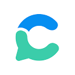
Consensusمجاني + مدفوعمحرك بحث علمي يجيب أسئلتك من الأوراق البحثية المحكّمة مباشرة بمصادرها.
DALL·E 3
ضمن ChatGPTتوليد صور دقيقة من وصف نصي، مدمج في ChatGPT مع فهم ممتاز للتفاصيل.
Leonardo AI
مجاني + مدفوعتوليد صور وأصول بصرية للألعاب والتصميم مع تحكّم دقيق في الأنماط.
Adobe Firefly
مجاني + مدفوعتوليد وتحرير الصور مدمج في أدوات Adobe، بترخيص تجاري آمن.
Windsurf
مجاني + مدفوعمحرر أكواد ذكي بوكيل برمجي يفهم مشروعك كاملاً وينجز المهام المعقدة.
Fireflies
مجاني + مدفوعتفريغ الاجتماعات وتلخيصها واستخراج المهام تلقائياً من مكالماتك.
Grok
مجاني + مدفوعمساعد xAI المدمج في منصة X، يتميّز بالوصول اللحظي للأحداث وتوليد الصور والفيديو والتحقق من المعلومات.
DeepSeek
مجاني + مدفوعنموذج صيني قوي في الاستدلال والبرمجة والرياضيات بتكلفة منخفضة، ونسخته المفتوحة متاحة للاستضافة الذاتية.
Microsoft Copilot
مجاني + مدفوعمساعد مايكروسوفت المدمج في Windows وOffice وEdge، يجمع المحادثة وتوليد الصور وتحليل المستندات.
Meta AI
مجانيمساعد ميتا المدمج في واتساب وإنستغرام وماسنجر، للمحادثة وتوليد الصور والإجابة السريعة.
Le Chat
مجاني + مدفوعمساعد Mistral الفرنسي السريع، يركّز على الخصوصية والأداء العالي مع دعم متعدد اللغات.
Qwen
مجاني + مفتوح المصدرعائلة نماذج علي بابا متعددة اللغات بدعم عربي جيد، متاحة للاستخدام والاستضافة الذاتية.
Poe
مجاني + مدفوعمنصة من Quora تجمع عشرات النماذج (GPT وClaude وGemini وغيرها) في واجهة واحدة بمقارنة سهلة.
Genspark
مجاني + مدفوعمحرك بحث بوكلاء أذكياء يبني لك صفحات ملخّصة شاملة من مصادر متعددة لكل استفسار.
Elicit
مجاني + مدفوعمساعد بحثي أكاديمي يستخرج النتائج والجداول من آلاف الأوراق العلمية المحكّمة بسرعة.
SciSpace
مجاني + مدفوعاقرأ وافهم الأوراق البحثية بمساعد يشرح المعادلات والمصطلحات المعقدة فقرة بفقرة.
You.com
مجاني + مدفوعمحرك بحث محادثي يجمع نماذج متعددة مع نتائج ويب محدّثة ووضع بحثي معمّق.
QuillBot
مجاني + مدفوعإعادة صياغة وتلخيص وتدقيق نحوي، مع كاشف انتحال؛ شائع بين الطلاب والكتّاب.
Sudowrite
مدفوعمساعد كتابة إبداعية للروائيين: تطوير الحبكة والشخصيات وتوسيع المشاهد بأسلوبك.
HyperWrite
مجاني + مدفوعمساعد كتابة بوكلاء ينجزون مهام كاملة مثل البحث وكتابة الردود تلقائياً.
DeepL Write
مجاني + مدفوعتحسين الكتابة والترجمة عالية الدقة، الأفضل للنصوص الاحترافية متعددة اللغات.
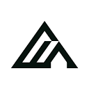
Fluxمجاني + مفتوح المصدرنماذج صور مفتوحة من Black Forest Labs بجودة عالية وواقعية، أساس كثير من الأدوات.
Stable Diffusion
مجاني + مفتوح المصدرالنموذج المفتوح الأشهر لتوليد الصور، قابل للتشغيل محلياً وتخصيصه بالكامل.
Krea AI
مجاني + مدفوعتوليد وتحرير الصور لحظياً مع معاينة فورية أثناء الكتابة، وأدوات تحسين الدقة.
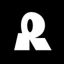
Recraftمجاني + مدفوعتوليد رسوم متجهية وأيقونات وشعارات بأسلوب موحّد، مفضّل لدى المصممين.
Magnific AI
مدفوعرفع دقة الصور وإضافة تفاصيل واقعية مذهلة؛ أداة احترافية للمصممين والمصورين.
Photoroom
مجاني + مدفوعتحرير صور المنتجات وإزالة الخلفيات وإنشاء خلفيات احترافية للمتاجر بنقرات.
Freepik AI
مجاني + مدفوعمكتبة أصول ضخمة مع مولّد صور ذكي وأدوات تحرير، بقوالب تسويقية جاهزة.
Sora
مدفوعمولّد الفيديو من OpenAI، ينشئ مقاطع واقعية وسينمائية من وصف نصي مع تماسك عالٍ.
Google Veo
مجاني + مدفوعمولّد فيديو جوجل بدقة عالية وصوت متزامن مولّد تلقائياً، متاح عبر Gemini.
Kling AI
مجاني + مدفوعتوليد فيديو صيني رائد بحركة سلسة وتماسك زمني ممتاز، قوي في تحويل الصورة لفيديو.
Luma Dream Machine
مجاني + مدفوعتوليد فيديو سريع من نص أو صورة بحركة كاميرا احترافية وجودة سينمائية.
Hailuo AI
مجاني + مدفوعمولّد فيديو من MiniMax بجودة عالية وفهم جيد للمشاهد المعقدة والحركة.
Murf AI
مجاني + مدفوعتوليد تعليق صوتي احترافي بمئات الأصوات واللغات للفيديوهات والعروض.
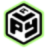
Play.htمجاني + مدفوعتحويل النص لكلام واقعي واستنساخ صوتي، مع دعم جيد للعربية للبودكاست والمحتوى.
Udio
مجاني + مدفوعتوليد أغانٍ وموسيقى كاملة من وصف نصي بجودة استوديو، منافس قوي لـ Suno.
Adobe Podcast
مجاني + مدفوعتحسين جودة الصوت وإزالة الضوضاء بذكاء، يجعل التسجيلات تبدو كأنها من استوديو.
Opus Clip
مجاني + مدفوعتحويل الفيديوهات الطويلة لمقاطع قصيرة جاهزة للنشر تلقائياً مع ترجمات.
Veed.io
مجاني + مدفوعمحرر فيديو متكامل بأدوات ذكية: ترجمة تلقائية، إزالة خلفية، تفريغ صوتي.
Lovable
مجاني + مدفوعابنِ تطبيقات ويب كاملة من وصف نصي بالعربية، مع كود وقاعدة بيانات جاهزة للنشر.
Bolt.new
مجاني + مدفوعبيئة تطوير في المتصفح تبني تطبيقات كاملة من فكرة، مع تشغيل ونشر فوري.
Replit
مجاني + مدفوعمنصة برمجة سحابية بمساعد ذكي يبني المشاريع ويشغّلها وينشرها من المتصفح.
Tabnine
مجاني + مدفوعإكمال أكواد ذكي يركّز على الخصوصية وأمان الكود، يدعم الاستضافة الذاتية للشركات.
Codeium
مجاني + مدفوعإكمال أكواد ومحادثة برمجية مجانية للأفراد، تدعم أكثر من 70 لغة برمجة.
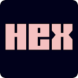
Hexمجاني + مدفوعمنصة تحليل بيانات تعاونية بمساعد ذكي يكتب الاستعلامات ويبني لوحات المعلومات.
DeepSeek Coder
مجاني + مفتوح المصدرنموذج برمجة مفتوح قوي ومجاني، منافس للأدوات المدفوعة في توليد وشرح الكود.
Manus
مدفوعوكيل ذكاء اصطناعي مستقل ينفّذ مهام معقدة كاملة من بحث وتحليل وبناء مخرجات.
Microsoft Copilot Studio
مدفوعبناء وكلاء ومساعدين مخصصين للشركات بلا برمجة، مدمج مع منظومة مايكروسوفت.
Mem
مجاني + مدفوعتطبيق ملاحظات ذكي ينظّم أفكارك تلقائياً ويربطها ويسترجعها بالمحادثة.
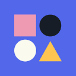
Reclaim AIمجاني + مدفوعمساعد جدولة يرتّب تقويمك تلقائياً ويحمي وقت تركيزك ويوازن مهامك.
Taskade
مجاني + مدفوعمساحة عمل تعاونية بوكلاء أذكياء لإدارة المشاريع والمهام والملاحظات معاً.
Beautiful.ai
مدفوعإنشاء عروض تقديمية احترافية تنسّق نفسها تلقائياً مع كل تعديل تجريه.
Read AI
مجاني + مدفوعتلخيص الاجتماعات وقياس التفاعل واستخراج الملخصات من Zoom وMeet وTeams.
HubSpot AI
مجاني + مدفوعأدوات ذكاء اصطناعي مدمجة في منصة CRM لكتابة المحتوى وأتمتة التسويق والمبيعات.
Surfer SEO
مدفوعتحسين المحتوى لمحركات البحث بتحليل المنافسين واقتراح الكلمات والبنية المثلى.
AdCreative.ai
مدفوعتوليد تصاميم إعلانات وصور منتجات عالية التحويل تلقائياً للحملات التسويقية.
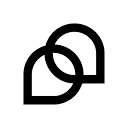
Tidioمجاني + مدفوعروبوت محادثة لخدمة العملاء يرد تلقائياً على المتاجر والمواقع على مدار الساعة.
Gong
مدفوعتحليل مكالمات المبيعات بالذكاء الاصطناعي لاستخراج الرؤى وتحسين أداء الفرق.
Khanmigo
مدفوعمعلم ذكي من Khan Academy يرشد الطالب خطوة بخطوة دون إعطاء الحل مباشرة.
Gamma Education
مجاني + مدفوعإنشاء مواد تعليمية وعروض دروس تفاعلية بسرعة من أي موضوع دراسي.
Speechify
مجاني + مدفوعتحويل أي نص أو مستند إلى صوت مسموع بأصوات واقعية، مفيد للقراءة والمراجعة.
Pi
مجانيمساعد محادثة من Inflection يركّز على الحوار الطبيعي والدعم الشخصي بنبرة ودودة.
Gemini Code Assist
مجاني + مدفوعمساعد برمجة من جوجل يكمل الأكواد ويشرحها ويصحّحها داخل محررك، مع طبقة مجانية سخية.
Microsoft 365 Copilot
مدفوعمساعد Microsoft مدمج في Word وExcel وOutlook وTeams لإنجاز مهام العمل اليومية.
Kimi
مجاني + مدفوعمساعد محادثة من Moonshot بنافذة سياق ضخمة، قوي في تحليل المستندات الطويلة.
HuggingChat
مجانيواجهة محادثة مفتوحة من Hugging Face تتيح تجربة عدة نماذج مفتوحة المصدر مجاناً.
Character.AI
مجاني + مدفوعمنصة لإنشاء شخصيات محادثة ذكية والتفاعل معها في أدوار وسيناريوهات متنوعة.
ChatGLM
مجاني + مدفوعنموذج محادثة ثنائي اللغة من Zhipu AI بقدرات قوية في الصينية والإنجليزية.
Mistral Le Chat Pro
مدفوعالنسخة الاحترافية من مساعد Mistral بسرعة أعلى وميزات متقدمة للأعمال.
Phind
مجاني + مدفوعمحرك بحث محادثي موجّه للمطورين يجيب بأمثلة كود ومصادر تقنية موثقة.
Exa
مجاني + مدفوعمحرك بحث دلالي مخصص للذكاء الاصطناعي يجد صفحات بالمعنى لا بالكلمات فقط.
Scholarcy
مجاني + مدفوعيلخّص الأوراق البحثية والتقارير الطويلة إلى بطاقات ملخصات سريعة الفهم.
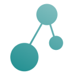
Connected Papersمجاني + مدفوعيبني خريطة بصرية للأوراق المرتبطة ببحثك لاكتشاف المراجع المهمة بسرعة.
Semantic Scholar
مجانيمحرك بحث أكاديمي مجاني مدعوم بالذكاء الاصطناعي لملايين الأوراق العلمية.
Notion AI Writer
مدفوعمساعد كتابة مدمج في Notion يصيغ ويلخّص ويترجم داخل مستنداتك مباشرة.
Jenni AI
مجاني + مدفوعمساعد كتابة أكاديمية يقترح الجمل ويضيف الاستشهادات أثناء كتابتك للبحث.
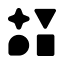
Type.aiمجاني + مدفوعمحرر مستندات مدعوم بالذكاء الاصطناعي يسرّع كتابة المقالات والتقارير.
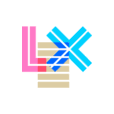
Lexمجاني + مدفوعمحرر كتابة بسيط بمساعد ذكي يساعد على تجاوز انغلاق الكتابة وتطوير الأفكار.
Wordvice AI
مجاني + مدفوعأداة تدقيق وتحرير للنصوص الأكاديمية والمهنية مع إعادة صياغة احترافية.
Hemingway Editor
مجاني + مدفوعيحلّل وضوح كتابتك الإنجليزية ويبرز الجمل المعقدة لتبسيط أسلوبك.
ProWritingAid
مجاني + مدفوعمدقق ومحلل أسلوب شامل للكتّاب يكشف التكرار والضعف ويقترح تحسينات.
Wordtune Spices
مجاني + مدفوعيضيف جملاً وأمثلة وإحصاءات لإثراء كتابتك وكسر جمود الصفحة البيضاء.
Adobe Photoshop AI
مدفوعميزة الحشو التوليدي في فوتوشوب لتعديل وتوسيع وإزالة عناصر الصور بالأوامر.
Playground AI
مجاني + مدفوعمنصة توليد وتعديل صور مرنة بواجهة سهلة وطبقة مجانية سخية للمبتدئين.
Clipdrop
مجاني + مدفوعحزمة أدوات صور من Stability: إزالة خلفية، رفع دقة، وتنظيف الصور بنقرة.
Upscayl
مجانيأداة مفتوحة المصدر لرفع دقة الصور وتكبيرها دون فقدان جودة، تعمل محلياً.
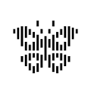
Reveمجاني + مدفوعمولّد صور يركّز على الدقة في تنفيذ الأوامر وكتابة النص داخل الصورة.
Pixlr
مجاني + مدفوعمحرر صور أونلاين بأدوات توليد وتعديل ذكية بديل خفيف لبرامج التصميم الثقيلة.
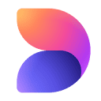
Designer Microsoftمجاني + مدفوعأداة تصميم من مايكروسوفت تنشئ صوراً ومنشورات وتصاميم من وصف نصي.
Vance AI
مجاني + مدفوعمجموعة أدوات لتحسين الصور: رفع الدقة، استعادة القديمة، وإزالة الضوضاء.
Phot.AI
مجاني + مدفوعاستوديو صور شامل للتجارة والتسويق: خلفيات منتجات، شعارات، وتحسينات.
Picsart
مجاني + مدفوعمحرر صور وفيديو شائع بأدوات ذكاء اصطناعي للتعديل السريع على الجوال والويب.
Stockimg AI
مجاني + مدفوعتوليد صور تجارية وشعارات وأغلفة وملصقات جاهزة للاستخدام التسويقي.
InVideo AI
مجاني + مدفوعيحوّل أمراً نصياً إلى فيديو كامل بمشاهد وتعليق صوتي وموسيقى تلقائياً.
Pictory
مجاني + مدفوعيحوّل المقالات والنصوص الطويلة إلى مقاطع فيديو قصيرة جاهزة للنشر.
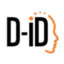
D-IDمجاني + مدفوعينشئ مقدّمين رقميين ناطقين من صورة ونص لفيديوهات تعليمية وتسويقية.
Hedra
مجاني + مدفوعيحرّك الصور والشخصيات لتتكلم وتعبّر بتزامن دقيق بين الصوت والوجه.
Captions
مجاني + مدفوعتطبيق تحرير فيديو بترجمة تلقائية وتأثيرات كلام احترافية لصنّاع المحتوى.
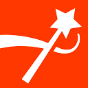
Submagicمجاني + مدفوعيضيف ترجمات وتأثيرات جذابة للمقاطع القصيرة لزيادة التفاعل تلقائياً.
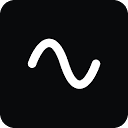
Riversideمجاني + مدفوعاستوديو تسجيل بودكاست وفيديو عن بُعد بجودة عالية وأدوات تحرير ذكية.
Vizard
مجاني + مدفوعيحوّل الفيديوهات الطويلة إلى مقاطع قصيرة مهيأة لكل منصة تلقائياً.
Wondershare Filmora
مجاني + مدفوعمحرر فيديو سهل بأدوات ذكاء اصطناعي للمونتاج والترجمة والتأثيرات.
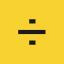
LALAL.AIمجاني + مدفوعيفصل الأصوات عن الموسيقى ويستخرج المسارات بدقة عالية للمنتجين.
Adobe Premiere AI
مدفوعميزات ذكاء اصطناعي في بريمير: تفريغ، إعادة تأطير، وتحسين الصوت تلقائياً.
Krisp
مجاني + مدفوعيزيل ضوضاء الخلفية والصدى من المكالمات والتسجيلات لحظياً بالذكاء الاصطناعي.
Vidnoz
مجاني + مدفوعمنصة فيديو بمقدّمين رقميين وقوالب جاهزة لإنتاج محتوى تسويقي بسرعة.
Amazon Q Developer
مجاني + مدفوعمساعد برمجة من AWS يكمل الأكواد ويشرحها ويفحص الأمان داخل المحرر.
JetBrains AI
مجاني + مدفوعمساعد ذكي مدمج في بيئات JetBrains لإكمال الكود وشرحه وتوليد الاختبارات.
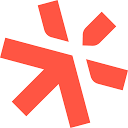
Sourcegraph Codyمجاني + مدفوعمساعد برمجة يفهم قاعدة كودك بالكامل ويجيب ويعدّل بناءً على سياقها.
Cline
مجانيإضافة وكيل برمجة مفتوحة المصدر لمحرر VS Code تنفّذ مهام كاملة باستقلالية.
Devin
مدفوعمهندس برمجي ذكي مستقل من Cognition ينجز مهام تطوير كاملة من التذكرة للحل.
Continue
مجانيمساعد برمجة مفتوح المصدر قابل للتخصيص يعمل مع نماذج متعددة داخل محررك.
Pieces
مجاني + مدفوعمساعد مطور يحفظ مقاطع الكود ويسترجعها بسياقها ويعمل دون اتصال.
Supabase AI
مجاني + مدفوعمساعد ذكي لبناء قواعد البيانات وكتابة استعلامات SQL داخل منصة Supabase.
Deepnote
مجاني + مدفوعدفتر بيانات تعاوني بمساعد ذكي لتحليل البيانات وكتابة الكود والرسوم.
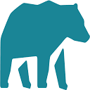
MindsDBمجاني + مدفوعيجلب تنبؤات الذكاء الاصطناعي مباشرة إلى قواعد بياناتك عبر استعلامات SQL.
Databricks AI
مدفوعمنصة بيانات وذكاء اصطناعي مؤسسية لبناء النماذج وتحليل البيانات الضخمة.
Akkio
مجاني + مدفوعمنصة تحليلات تنبؤية بلا كود تبني نماذج من بياناتك بسحب وإفلات.
Bardeen
مجاني + مدفوعأتمتة مهام المتصفح واستخراج البيانات من المواقع دون كتابة كود.
Microsoft Power Automate
مجاني + مدفوعمنصة مايكروسوفت لأتمتة سير العمل بين التطبيقات بقدرات ذكاء اصطناعي.
Gumloop
مجاني + مدفوعيبني مسارات أتمتة ذكية بالسحب والإفلات لمهام معقدة بلا برمجة.
Relay.app
مجاني + مدفوعأداة أتمتة تجمع بين الخطوات الآلية وموافقات البشر في مسار واحد.
Lindy
مجاني + مدفوعيبني مساعدين أذكياء يؤتمتون البريد والاجتماعات والمهام نيابة عنك.
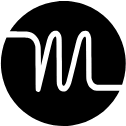
Motionمدفوعيخطط يومك تلقائياً ويرتّب المهام والاجتماعات حسب الأولوية والوقت المتاح.
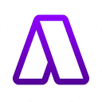
Akiflowمدفوعيجمع مهامك من كل أدواتك في مكان واحد ويحوّلها إلى مواعيد في تقويمك.
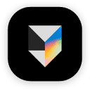
Tanaمجاني + مدفوعمساحة عمل ذكية تنظّم الملاحظات والمهام بهيكل مرن مدعوم بالذكاء الاصطناعي.
Mem AI
مجاني + مدفوعتطبيق ملاحظات ذكي يربط أفكارك تلقائياً ويسترجعها وقت حاجتك إليها.
Fireflies Notetaker
مجاني + مدفوعيحضر اجتماعاتك ويفرّغها ويلخّصها ويستخرج المهام والقرارات تلقائياً.
Magical
مجاني + مدفوعيؤتمت المهام المتكررة وملء النماذج عبر اختصارات نصية في أي موقع.
Bricks
مجاني + مدفوعيحوّل أوامرك النصية إلى جداول وتقارير ولوحات بيانات جاهزة فوراً.
Vapi
مجاني + مدفوعمنصة لبناء وكلاء صوتيين أذكياء للرد على المكالمات وأتمتة خدمة العملاء.
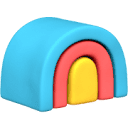
Clayمجاني + مدفوعمنصة تنقيب وإثراء بيانات العملاء المحتملين وأتمتة التواصل بالذكاء الاصطناعي.
Apollo.io
مجاني + مدفوعقاعدة بيانات مبيعات ضخمة بأدوات ذكية للتنقيب والتواصل وإدارة الصفقات.
Jasper Brand Voice
مدفوعيدرّب الذكاء الاصطناعي على نبرة علامتك لإنتاج محتوى تسويقي متسق.
Intercom Fin
مدفوعوكيل دعم عملاء ذكي يجيب فوراً على استفسارات العملاء من قاعدة معرفتك.
Lavender
مجاني + مدفوعمساعد كتابة رسائل المبيعات يحلّلها ويقترح تحسينات لرفع معدّل الرد.
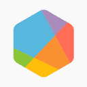
Brandwatchمدفوعمنصة إصغاء اجتماعي وتحليل علامة تجارية مدعومة بالذكاء الاصطناعي.
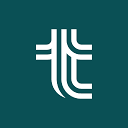
Tabilityمجاني + مدفوعأداة متابعة أهداف OKR بمساعد ذكي يصيغ الأهداف ويتابع التقدّم.
Albert
مدفوعمنصة تشغّل الحملات الإعلانية الرقمية وتحسّنها ذاتياً بالذكاء الاصطناعي.
Quizlet AI
مجاني + مدفوعينشئ بطاقات واختبارات مراجعة ذكية من ملاحظاتك لمساعدتك على الحفظ.
Duolingo Max
مدفوعنسخة مطوّرة من دولينجو بدروس محادثة وشرح أخطاء مدعوم بالذكاء الاصطناعي.
Brisk Teaching
مجاني + مدفوعإضافة للمعلمين تنشئ خطط الدروس والاختبارات والتغذية الراجعة بسرعة.
MagicSchool
مجاني + مدفوعمنصة أدوات ذكاء اصطناعي للمعلمين لإعداد المواد وتوفير وقت التحضير.
Studyfetch
مجاني + مدفوعيحوّل ملاحظاتك ومحاضراتك إلى بطاقات واختبارات ومرشد دراسي تفاعلي.